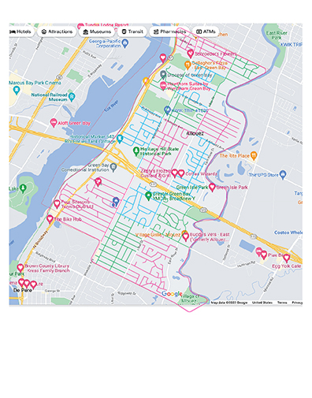
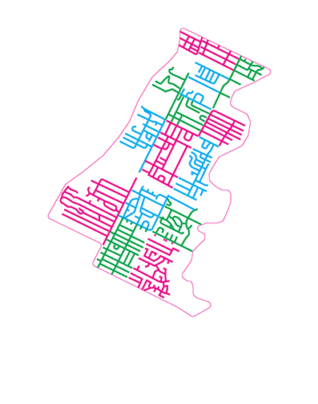
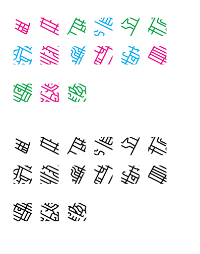
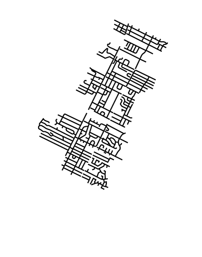
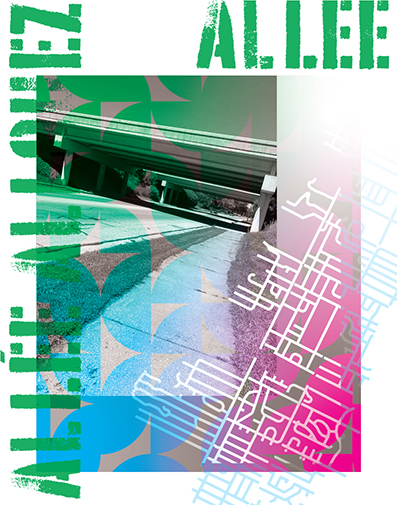
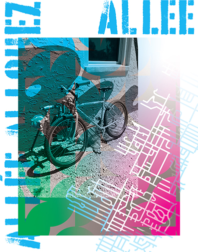
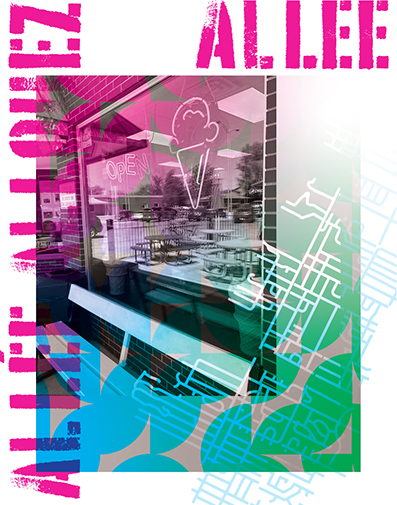
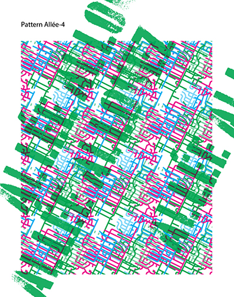
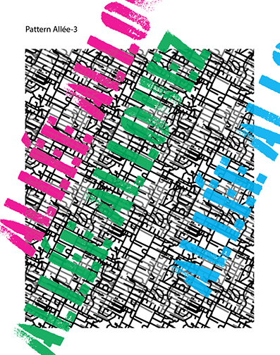

The concept is to support sustainability by encouraging alternate transportation while supporting local businesses in the Village of Allouez, WI.
The intended audience is residents and visitors in Allouez, WI. l' allée is defined as: driveway, aisle, path, lane, walk, drive
Geography
Allouez is located between Green Bay to the north, and De Pere to the south. The Fox River forms a natural border to the west and the East River to the east. According to the United States Census Bureau, the village has a total area of 5.15 square miles (13.34 km2), of which, 4.61 square miles (11.94 km2) of it is land and 0.54 square miles (1.40 km2) is water.[7]
In response to critique feedback, I researched alternate words to "walk." Thank you for the comments, I'm always trying to make my work more inclusive.
Walk as a verb
Thesaurus: stroll, saunter, amble, wend one's way, trudge, plod, hike, tramp, trek, march, stride, troop, patrol, step out, wander, ramble, tread, prowl, footslog, promenade, roam, traipse; stretch one's legs, go for a walk, take the air; advance, proceed, move, go, make one's way; informal mosey, pootle; British informal yomp; rare perambulate.
French inspiration:
Q: What would motivate you?
   
Project 1 | Draft 1
I created the geometric pattern using an Adobe Illustrator Script. I also created patterns using the street line art I drew from the map.




